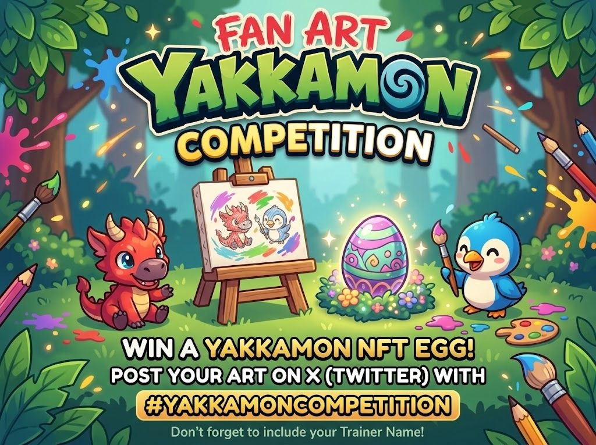

The Yakkamon team has opened its first official fan art competition, and the prize is the one thing nobody has been able to mint since September 17: a sealed Yakkamon NFT egg. Twenty of them, in fact — one for each of the twenty best entries. The brief fits in a sentence: make Yakkamon fan art, post it on X with #yakkamoncompetition, put your Trainer Name in the post, and do it soon, because the team picks its winners early on Monday, October 12.
That leaves less than a week between the announcement and the pick, which is why the post itself ends with “Post ASAP.” Here is everything the team said, what each line means in practice, what the egg actually is, why “early Monday” means Sunday for most of the world, and how to give an entry its best chance.

The rules, as posted
The announcement is six short lines. Every one of them carries a practical consequence, so here they are side by side.
| What the team said | What it means for you |
|---|---|
| “Create Yakkamon fan art!” | Any medium. Draw it, paint it, pixel it, sculpt it, stitch it, animate it — the brief is Yakkamon fan art, not a particular technique. Physical work counts; photograph it well. |
| “AI-generated art is accepted, but highly original, handcrafted artwork will be heavily prioritized” | AI entries are not disqualified, but they start from behind. With twenty prizes and the team itself judging, this sentence is most of the competition — more below. |
| “Post your fan art on X (Twitter) using the hashtag #yakkamoncompetition” | The hashtag is how entries are found. A post without it is not an entry, however good the art. Hashtags on X are not case-sensitive, so #YakkamonCompetition works too — just spell it exactly. |
| “Include your Yakkamon Trainer Name in the post.” | Type it in the text of the post, not only inside the image. It is how a winning post gets matched to a trainer account. |
| “Winners are picked early Monday (Oct 12). Post ASAP.” | No closing time is given — only the moment the picking starts. Treat Sunday, October 11 as your last day, and post earlier if you can (why). |
| “The 20 best fan art entries selected by the team will win a Yakkamon NFT egg!” | Twenty prizes, chosen by the team — not by likes, reposts or a public vote. Engagement is not the metric; the art is. |
What you’re playing for
A Yakkamon NFT egg is the sealed Genesis NFT the free mint handed out in September: 10,000 of them went in four days and sold out during Wave 4 on September 17. Since then the only way to get one has been to buy one on the secondary market. A free egg for a drawing is, right now, a real prize.
Every egg stays hidden until the reveal on October 14, when the whole collection opens at once. The official free mint page puts 68 Legendaries, 50 Rares and 9,882 Uncommons inside the 10,000 minted eggs, and gives the total revealed that day as 11,500 — because, in the team’s own words, “an extra 1,500 hidden egg NFTs will be minted after the free mint and distributed out in special events before the reveal happens.” A twenty-egg competition decided two days before the reveal fits that description exactly. The team has not said so in as many words, so treat “the prize eggs come out of the 1,500” as our reading, not theirs.
- What a winner can do with it — hold it, trade it on Ronin Market before or after the reveal, and once early access opens (November or December) deposit the Yakkamon inside into the game and play with it.
- What it is not — a leaderboard boost. Nothing in the announcement ties the prize to points, rank or waves. It is a monster, not a multiplier.
- What’s inside — nobody knows, including the team, until October 14. If the eggs are drawn from the same pool as everyone else’s, the published odds apply: roughly one egg in 147 holds a Legendary, about one in 85 holds a Rare or better, and the rest are Uncommons — which are full, working Yakkamon, not blanks.
One timing detail the post leaves open: winners are picked on the 12th and the reveal is on the 14th, so whether a winner receives a sealed egg and watches it open with everyone else, or receives an already-revealed Yakkamon a little later, is not stated. Either way it is the same monster.
“Early Monday” is a time-zone question
The post gives no hour. It says the winners are picked early Monday, October 12 — and the team works from Australia (its Battles guide opens with “G’day trainers,” and its dev streams run on Australian time). Early Monday morning in eastern Australia is still Sunday afternoon in the United States and Sunday night in Europe. Here is what a Monday-morning start in Sydney time looks like elsewhere:
| If the team starts picking at… | UTC | US Eastern | US Pacific | UK | Philippines | Indonesia (Jakarta) |
|---|---|---|---|---|---|---|
| Mon, Oct 12, 6:00 AM Sydney | Sun, 19:00 | Sun, 3:00 PM | Sun, 12:00 PM | Sun, 8:00 PM | Mon, 3:00 AM | Mon, 2:00 AM |
| Mon, Oct 12, 9:00 AM Sydney | Sun, 22:00 | Sun, 6:00 PM | Sun, 3:00 PM | Sun, 11:00 PM | Mon, 6:00 AM | Mon, 5:00 AM |
Sydney is on daylight time (UTC+11) in October; the US is still on daylight time until November 1 and the UK until October 25. If the team is on Brisbane time instead, every column moves one hour later. The hour is our assumption — the team said only “early Monday.”
The safe rule is simple: post before Sunday is over where you live, and sooner if you can. Nothing in the announcement says early entries are favored, but a post that lands while the judges are already choosing may never be seen — and a post that has been up for days has had time to be found, shared and looked at twice. The team’s own words were “Post ASAP.”
How to enter, step by step
- Make the art. Any medium, any style, as long as it is recognizably Yakkamon. The official roster sheet shows the twenty-six creatures the team has revealed so far, the Genesis Legendaries have their own lore, and the egg itself is fair game — the team’s own poster puts one center stage. The creatures have no published names yet, so describe the one you drew.
- Find your Trainer Name. It is the name on your trainer dashboard at yakkamon.com — sign in with the email you pre-registered with. Not pre-registered yet? Registration is still open and free, so do that first.
- Post it on X from a public account. Attach the image (upload a PNG for line art and flat colors — X compresses hard), write a line about the piece, and put #yakkamoncompetition and your Trainer Name in the text of the post. Tagging @yakkamon_game is not a requirement, but it costs nothing.
- Check the three things that get an entry missed. The hashtag is spelled exactly; the Trainer Name is in the text, not only in the picture; and the account is not protected — a private account’s posts do not show up in a hashtag search, so the judges cannot find them.
- Leave it up. The post is the entry. Don’t delete and repost it to “bump” it, and don’t edit the hashtag out later.
- Be done before Sunday ends. See the table above — and remember the pick is Monday morning in Australia, not Monday where you are.
On AI art: allowed, and the team told you how it will judge
The one sentence that will decide most of the twenty places: AI-generated art is accepted, but highly original, handcrafted artwork will be heavily prioritized. Read it plainly. Handcrafted entries get picked first; AI entries compete for whatever is left after that. If you draw, paint or build things by hand, this competition was written for you. If you would normally reach for a generator, this is the week to pick up a pencil — the team has said in as many words which it would rather see.
- “Handcrafted” is not “traditional only.” Digital painting, pixel art, 3D you modeled yourself, clay, crochet, a carved pumpkin — the line the team drew is between work you made and work a model generated, not between paper and screen.
- A sketchbook page beats a polished render. An honest pencil drawing with visible effort is exactly what “highly original, handcrafted” describes. Rough is fine. Finished is better. Yours is the point.
- Show the work. A second image with the sketch, the palette or the half-finished piece makes the handcrafted claim self-evident. It is not required, but it answers the question before it is asked.
- Don’t dress up AI output as handmade. The team looks at a great deal of art, and it has every incentive to be careful about twenty NFTs. If you do use AI, say so and make the concept unmistakably yours — you are still eligible, just not first in line.
Six ways to make an entry stronger
None of this is in the rules. It is what we would do with a pencil and five days.
- Pick a real Yakkamon and say which. “The green dragon with the pink horns from the October roster sheet” tells a judge you drew their creature, not a generic monster. The roster article walks through every reveal.
- Put it in the game. A Yakkamon working a tile, out on a hunt, lined up in a battle setup, or asleep beside a full storage bin shows you know what the game is, and gives the piece a story.
- Light it and shoot it properly. For physical work, daylight, a plain background, no glare, the camera square to the page. Half of a good painting’s chances are lost in a dim phone photo.
- One strong piece over five rushed ones. The post does not limit entries, and it does not say more entries help either. Twenty winners are chosen on quality; spend the week on your best idea.
- Write the post for a human. A sentence about what it is and how you made it, then the hashtag and your Trainer Name. The judge reading it is a person who likes this game as much as you do.
- Don’t buy engagement. The team picks. Likes, reposts and bought followers are not the metric, and a post that looks inflated is a post that looks like it has something to hide.
What the post doesn’t say
- One entry or many? Not stated. Nothing forbids several posts; nothing suggests they help.
- Where do the twenty eggs come from, and when do they arrive? Our reading is the 1,500-egg “special events” pool, delivered around the reveal — neither the source nor the delivery date is in the post.
- How are winners told, and where is the egg sent? The Trainer Name requirement suggests the prize goes to the account behind that name — most likely the Ronin wallet linked to it, as the free mint worked. If your trainer account has no Ronin wallet linked yet, linking one before Monday is a sensible precaution. That is our inference, not an instruction from the team.
- Can the team use the art? Competitions of this kind usually reserve the right to repost or feature entries; this one says nothing either way. Assume anything you post publicly may be shared.
- Is there a results post? Presumably on @yakkamon_game on or after October 12 — and we will link it here when it appears.
Read next
- The roster, reveal by reveal — the twenty-six Yakkamon the team has shown, which is what there is to draw
- The Free Mint Is Complete — why nobody can mint an egg anymore, and what the October 14 reveal opens
- The collection page, explained — what a sealed egg is and where it trades
- What’s inside an egg, by the odds — the Legendary, Rare and Uncommon math